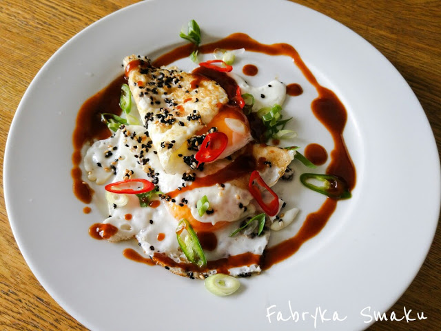

Jajka sadzone po azjatycku

Recipe:
- Przytnij dymki oraz chili i pokrój je w cienkie ukośne plasterki.
- Włóż dymkę i chili do miski z lodowatą wodą, czerwonym octem winnym i odstaw na później.
- Upraż na patelni sezam przez 1 min.
- Skrop sezam 1 łyżką oliwy i wbij na patelnię jajka.
- Po usmażeniu jajek jak lubisz, przełóż je na talerze.
- Skrop całość sosem hoisin (można rozrzedzić wodą).
- Posyp jajka odcedzoną dymką i chili. Nakłuj żółtka.